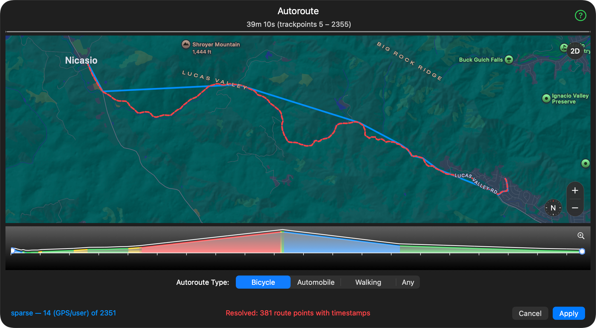

This panel can automatically place trackpoints between two widely separated trackpoints you select.
It can replace trackpoints from a GPX file that are not sufficiently accurate.
You can also create an entire route from scratch, adding trackpoints at the beginning and end of your route, then interpolating.
All the options use the same technology as Apple Maps to do the interpolation.
When points are added, we contact appropriate web services (USGS, etc.) to obtain elevation data
The output from this process can be significantly better than recorded GPS for services such as Kinomap and Rouvy.